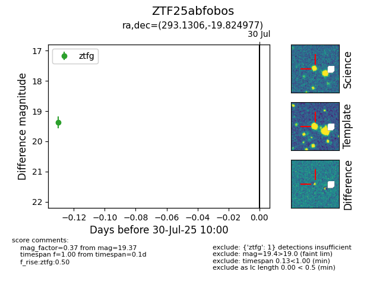

Target ZTF25abfobos at 2025-07-30 10:00, see:
FINK: fink-portal.org/ZTF25abfobos
Lasair: lasair-ztf.lsst.ac.uk/objects/ZTF25abfobos
ALeRCE: alerce.online/object/ZTF25abfobos
alt names
ZTF25abfobos (ztf,fink)
coordinates:
equatorial (ra, dec) = (293.1306,-19.82498)
galactic (l, b) = (19.2494,-17.69389)
photometry
last ztfg=19.37
1 ztfg detections
